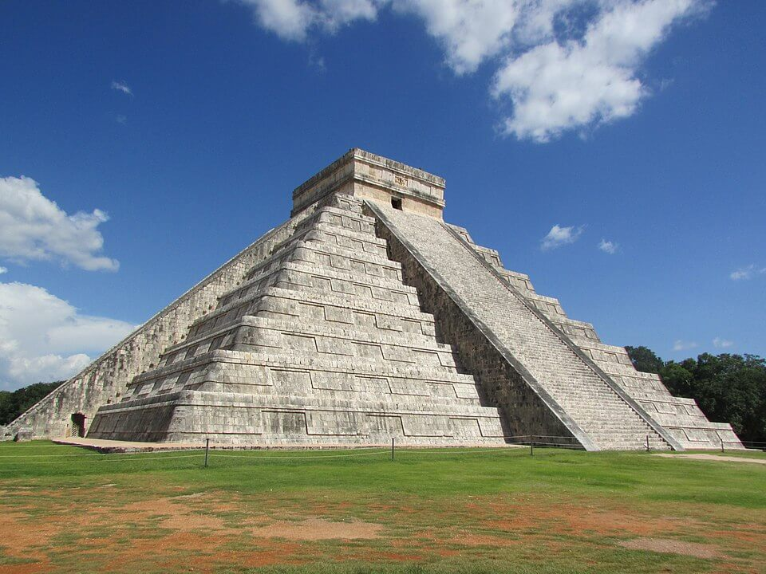
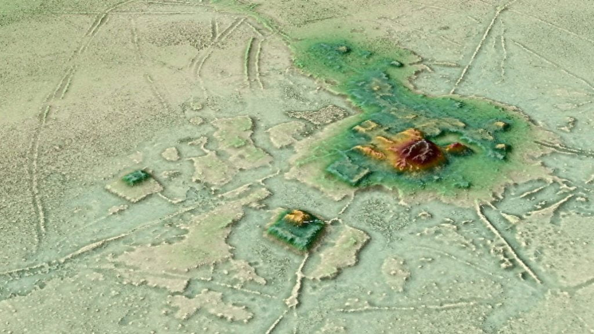

ရှေးဟောင်း သုတေသီ တွေက ဒီ အမေဇုံ ဖြစ်ဝှမ်းဟာ တောင်အမေရိက တိုက်ကို စပိန် ကိုလိုနီ နယ်ချဲ့တွေ မရောက်ရှိမီ အချိန်က လူဦးရေ ခပ်ကျဲကျဲပဲ ရှိခဲ့တဲ့ အရပ်ဒေသ ဖြစ်တယ်လို့ ယူဆခဲ့ ကြပါတယ်။ စပိန် ကိုလိုနီ နယ်ချဲ့တွေ ၁၅ ရာစုနှစ် နှောင်းပိုင်း ရောက်ရှိလာ ပြီးမှ ဒီ ဒေသမှာ လူနေထူထပ် များပြား လာခဲ့တာ ဖြစ်တယ်လို့ ယူဆခဲ့ ကြတာပါ။
ဒီလို ယူဆခဲ့ ကြတာကလဲ အကြောင်း ရှိပါတယ်။ ဘာကြောင့်ဆိုတော့ ဒီ အမေဇုံ မြစ်ဝှမ်း ဒေသက ကုန်းမြေတွေဟာ နှစ်စဉ် ကြီးမားတဲ့ ရေလွှမ်းမိုးမှု ဒါဏ်ကို ခံကြရ တာမို့ ဒီဒေသမှာ အမြဲတမ်း အခြေချ နေထိုင်တဲ့ မြို့ကြီး ပြကြီးတွေ တည်ဆောက်ဖို့ မဖြစ်နိုင် ဖူးလို့ ယူဆခဲ့ ကြလို့ပဲ ဖြစ်ပါတယ်။
ဒါပေမယ့် ဒီ အယူအဆကို အချို့ ရှေးဟောင်း သုတေသန ပညာရှင် တွေက လက်မခံ ကြပါဘူး။ ဒီလို လက်မခံ ကြတဲ့ သူတွေထဲမှာ ရှေးဟောင်း သုတေသန ပညာရှင် တစ်ဦးဖြစ်တဲ့ ဟေကို ပရူမားစ် (Heiko Prümers) လဲ အပါအဝင် ဖြစ်ပါတယ်။ သူဟာ ဂျာမနီ နိုင်ငံ ဘွန်းတက္ကသိုလ် (University of Bonn) က တောင်အမေရိက သမိုင်း ကျွမ်းကျင်သူ ရှေးဟောင်း သုတေသန ပညာရှင် တစ်ဦး ဖြစ်ပါတယ်။
လွန်ခဲ့တဲ့ နှစ် ၂၀ တုန်းက သူနဲ့ သူ့ရဲ့ တပည့်တစ်ဦး ဖြစ်သူ လာပါ့ဇ် (La Paz) တို့ နှစ်ဦးဟာ ဘိုလစ်ဗီယား နိုင်ငံ မြောက်ပိုင်းက ကာဆာရာဘီ ကျေးရွာ (village of Casarabe in northern Bolivia) အနီးက တောင်ပို့ နှစ်ခုကို တူးဖေါ် ခဲ့ကြပါတယ်။ ဒီ တောင်ပို့ နှစ်ခုဟာ တကယ်တော့ ပျက်စီး ယိုယွင်းနေပြီ ဖြစ်တဲ့ ပိရမစ်ကြီး နှစ်ခု ဖြစ်နေတာကို ရှာဖွေ တွေ့ရှိ ခဲ့ကြပါတယ်။
တနည်းအားဖြင့် ပြောရရင် ဒီဒေသမှာ ရှေးက လူသားတွေ မြို့ပြတည်ထောင် အခြေချ နေထိုင်ခဲ့တယ် ဆိုတဲ့ အထောက်အထား ဖြစ်ပါတယ်။

ဒီ ပိရမစ် တွေရဲ့ ပတ်ဝန်းကျင်မှာ ရှေးခေတ် လူသားတွေဟာ လယ်ယာ စိုက်ပျိုးခြင်း၊ ငါးဖမ်းခြင်း၊ အမဲလိုက်ခြင်းများကို နှစ်ပတ်လည် ပြုလုပ်ခဲ့ ကြပါတယ်။ ဒီ ပိရမစ်တွေ တွေ့ရှိရာ ကျေးရွာကို အစွဲပြုပြီး ဒီ ယာဉ်ကျေးမှု ကို ကာဆာရာဘီ ယဉ်ကျေးမှု (Casarabe culture) လို့ အမည်ပေးထားခဲ့ ကြပါတယ်။
ဒီ ယဉ်ကျေးမှု လူ့အဖွဲ့ အစည်းတွေကို ဘိုလစ်ဗီးယား မြောက်ပိုင်း တလျှောက်မှာ အများအပြား ရှာဖွေ တွေ့ရှိခဲ့ ကြပါတယ်။ ဒီ ယဉ်ကျေးမှု ပြန့်နှံ့ရာ ဒေသဟာ အကျယ်အဝန်း အားဖြင့် ၄,၅၀၀ စတုရန်း ကီလိုမီတာခန့် ရှိတဲ့ Llanos de Mojos ဆာဗားနား ဒေသကို ဗဟိုပြုပြီး ပတ်ဝန်းကျင်ကို ပြန့်နှံ့ သွားခဲ့တာ ဖြစ်ပါတယ်။
တဖြည်းဖြည်းနဲ့ ရှေးဟောင်း သုတေသီ တွေဟာ ကာဆာရာဘီ ယဉ်ကျေးမှုနဲ့ ပတ်သက်တဲ့ အချက်အလက် တွေကို တဖြည်းဖြည်း ပိုမို သိရှိ လာခဲ့ ရပါတယ်။ သူတို့ဟာ စိုက်ပျိုးရေး လုပ်ငန်းအပြင် ရေလုပ်ငန်း ကိုလဲ လုပ်ကိုင်ခဲ့ ကြပါတယ်။ နောက်ပြီး ရေလွှမ်းမိုးမှု ကနေ ကာကွယ်ဖို့ တူးမြောင်းတွေ နဲ့ တာတမံ တွေကိုလဲ ဆောက်လုပ် ခဲ့ကြပါတယ်။
သူတို့ရဲ့ လူ့အဖွဲ့အစည်းဟာလဲ ရှုပ်ထွေးတဲ့ လူမှုနိုင်ငံရေး ဖွဲ့စည်းပုံ (sociopolitical organization) ရှိတယ် ဆိုတာ တွေ့လာ ရပါတယ်။ အခြေချ ဒေသ တစ်ခုနဲ့ တစ်ခု အကြား ကူးသန်းရောင်ဝယ်ရေးတွေ ထွန်းကား ခဲ့တယ်၊ လမ်းတွေ၊ တူးမြောင်း၊ တာတမံတွေ၊ ရေနှုတ်မြောင်း၊ ရေသွယ်မြောင်းတွေ ဖေါက်လုပ်ခဲ့တယ် ဆိုတာကိုလဲ တွေ့လာရပါတယ်။
ဒီ အထောက်အထား တွေကို ရှေးဟောင်း သူတေသန တူးဖေါ်မှုပေါင်း မြောက်များစွာ ကနေ ရှာဖွေ ရရှိခဲ့ ကြတာပါ။ အချို့ တူးဖေါ်ရေး ဒေသတွေ ဟာဆို တစ်ခုနဲ့ တစ်ခု ကီလိုမီိတာ ၁,၀၀၀ ကျော်လောက်တောင် ကွာကြပါတယ်။

ဒီဒေသ အနှံ့မှာ နှံ့နှံ့ စပ်စပ် တူးဖေါ်ဖို့ ဆိုတာ ငွေကုန်ကြေးကျ အလွန် များပြားမှာ ဖြစ်ပါတယ်။ ဒါ့ကြောင့် ပညာရှင် တွေဟာ light detection and ranging technology (Lidar) လို့ခေါ်တဲ့ နည်းပညာ သစ်ကို အသုံးချပြီး အမေဇုံ မြစ်ဝှမ်းကို လေ့လာ ခဲ့ကြပါတယ်။
ဒီ Lidar နည်းပညာက လေဆာရောင်ခြည်ကို အသုံးပြုပြီး မြေမျက်နှာပြင်နဲ့ မြေအောက်က အဆောက်အဦ တွေကို မြေပုံ ဆွဲပေးတဲ့ နည်းပညာ ဖြစ်ပါတယ်။ ရှေးဟောင်းသုတေသီ တွေဟာ ဒီ နည်းပညာကို အသုံးပြုပြီး ယခင်ကလဲ မာယာ မြို့ပြတွေကို အောင်မြင်စွာ လေ့လာ ခဲ့ကြပြီး ဖြစ်ပါတယ်။
Prümers နဲ့ အဖွဲ့ဟာ ဒီ လေဆာရောင်ခြည် နည်းပညာကို အသုံးပြုပြီး ကာဆာရာဘီ အခြေချ ဒေသ ၂၆ ခုကို ရှာဖွေ နိုင်ခဲ့ကြပါတယ်။ ဒီအထဲက ၁၅ ခုဟာ အရင် ကတဲက ရှာဖွေ တွေ့ရှိထားပြီးတဲ့ ဒေသတွေ ဖြစ်ကြပါတယ်။ ကျန်တဲ့ ၁၁ ခုကတော့ အသစ်တွေ့ရှိတဲ့ အခြေချ ဒေသတွေ ဖြစ်ပါတယ်။
ပညာရှင် တွေဟာ တွေ့ရှိတဲ့ အခြေချ ဒေသတွေကို အမျိုးအစား ခွဲခြား ခဲ့ကြပါတယ်။ ဒီလို အမျိုးအစား ခွဲခြားရာမှာ ဒီ အခြေချ ဒေသက အဆောက်အဦ တွေရဲ့ အရွယ်အစား၊ ရေသွယ်တူးမြောင်း တွေ ဘယ်လောက်ထိ များပြား သလဲ ဆိုတာနဲ့ လမ်းတွေ ဘယ်လောက် ဖောက်လုပ် ထားသလဲ ဆိုတာတွေကို မူတည်ပြီး အမျိုးအစား ၅ မျိုး ခွဲခြားခဲ့ ကြပါတယ်။
ဒီ အထဲက အခြေချ ဒေသ နှစ်ခုဟာ အခြား ဒေသတွေထက် သိသိသာသာ ပိုကြီးတာကို တွေ့ကြ ရပါတယ်။ ဒီ ဒေသတွေဟာ ဒီ ယဉ်ကျေးမှု ရဲ့ အချက်အချာ ဗဟိုချက်တွေ ဖြစ်မယ်လို့ ယူဆ ရပါတယ်။ ကိုတိုကာ (Cotoca) နဲ့ လန်ဒီဗာ (Landiva) လို့ အမည် ပေးထားတဲ့ ဒီ လူနေရပ် နှစ်ခုဟာ ဧက ၂၅၀ ကျော် ကျယ်ဝန်းပြီး မြို့ရိုး၊ ကျုံးမြောင်း တွေနဲ့ ဝန်းရံ တည်ဆောက် ထားခဲ့ ကြပါတယ်။ တနည်းအားဖြင့် ဒီ လူနေရပ် နှစ်ခုဟာ မြို့ပြ အဆင့်အတန်း ရှိတဲ့ အခြေချ နေရပ်တွေ ဖြစ်ကြပါတယ်။
ကိုတိုကာ မြို့ဟောင်းမှာ မူလ မြို့တည်စကထက် လူနေ ကျယ်ပြန့်လာပြီး မြို့ရိုး အပြင်ဖက်ကို လူနေအိမ်ခြေတွေ လျှံထွက် လာတဲ့ အထောက်အထား တွေလဲ တွေ့ကြ ရပါတယ်။
ဒီ မြို့ဟောင်း နှစ်မြို့ လုံးဟာ ကြီးမားတဲ့ ဘာသာရေး အဆောက်အဦ ကျောင်းဝင်းကြီး တွေရဲ့ ပတ်ခြာလည်မှာ တည်ဆောက် ထားခဲ့ ကြတာ ဖြစ်ပါတယ်။ ဒီ ဘာသာရေး အဆောက်အဦ အားလုံးဟာ အနောက်မြောက် အရပ်ကို မျက်နှာမူပြီး တည်ဆောက် ထားခဲ့ ကြတာပါ။ ဒီ အရပ်ကို ဘာလို့ မျက်နှာမူ ထားကြသလဲ ဆိုတာကိုတော့ ပညာရှင်တွေ အဖြေရှာ မရကြ ပါဘူး။
ဒုတိယ အုပ်စုမှာ ပါဝင်တဲ့ အခြေချ လူနေရပ်ဝန်း တွေကတော့ အတန်ငယ် သေးငယ် ကြပါတယ်။ သူတို့ဟာ ဧက ၅၀ နဲ့ ၁၀၀ ကြား ရှိကြပြီး အခမ်းအနား ပြုလုပ်ရာ အဆောက်အဦ တစ်ခုရဲ့ ပတ်ခြာလည်မှာ တည်ဆောက် ထားခဲ့ ကြတာ ဖြစ်ပါတယ်။ ရှေးခေတ် လူနေမှု အနေနဲ့ဆို ဒီ လူနေရပ် တွေဟာ မြို့ငယ်လေး တစ်မြို့ အရွယ်လို့ ပြောရမှာ ဖြစ်ပါတယ်။
တတိယ နဲ့ စတုတ္ထ အုပ်စုက အခြေချ လူနေရပ် တွေကတော့ ရွာလေးတွေ ဖြစ်ကြပါတယ်။ သူတို့ရဲ့ အရွယ်ဟာ ၆ ဧက ကနေ ၁ ဧက အထိ သေးငယ် ကြပါတယ်။
ပဉ္စမ အုပ်စုကတော့ ဘာသာရေး အဆောက်အဦ မရှိတဲ့ ရွာငယ်လေးတွေ ဖြစ်ကြပါတယ်။ ဒီ အုပ်စုဝင် ရွာတွေကိုတော့ လေဆာ ထောက်လှမ်းမှုကနေ ရှာဖွေ မှု မပြုနိုင် ခဲ့ပါဘူး။ သို့သော် ပညာရှင် တွေက ဒီလို ဘာသာရေး အဆောက်အဦ မရှိတဲ့ ရွာမျိုးတွေလဲ ရှိခဲ့ လိမ့်မယ်လို့ ယုံကြည် ကြပါတယ်။
ဒီ မြို့တွေနဲ့ ရွာတွေဟာ အများအားဖြင့် တစ်ခုနဲ့ တစ်ခု ၁၀ ကီလိုမီတာ ခန့်အတွင်း တည်ဆောက် ထားခဲ့ ကြတာ ဖြစ်ပါတယ်။ မြို့ရွာတွေဟာ Llanos de Mojos ဒေသရဲ့ အရှေ့ပိုင်းမှာ ပိုပြီး ထူထပ်တာ ကိုလဲ တွေ့ကြ ရပါတယ်။ ဒီ ဒေသမှာ မြို့ရွာတွေ တစ်ခုနဲ့ တစ်ခုဟာ ၁.၈ ကီလိုမီတာ ကနေ ၄ ကီလိုမီတာ အတွင်းပဲ ကွာဝေးကြတာကို တွေ့ကြ ရပါတယ်။
မြို့ရွာ အများစုဟာ ကီလိုမီတာ ၁၀၀ နဲ့ ၅၀၀ အကျယ်အဝန်း ရှိတဲ့ အရပ်မှာ စုစည်း နေကြတာ ဖြစ်ပြီး အချင်းချင်းလဲ လမ်းတွေနဲ့ ဆက်သွယ် ထားကြပါတယ်။
ရေသွယ် တူးမြောင်း အများစုကို ကိုတိုကာ နဲ့ လန်ဒါဗာ မြို့တော် တွေရဲ့ ပတ်လည်မှာ တူးဖော် ဆောက်လုပ် ထားကြပါတယ်။ ဒီ တူးမြောင်း တွေကနေ မြို့တော်နဲ့ အနီးဝန်းကျင်က မြို့ပြ တွေကို ဆက်သွယ် ပေးထား ကြပါတယ်။
ဒီ အထဲက အရှည်ဆုံး တူးမြောင်းဟာ Laguna San José ရေကန်ကြီးကို ဆက်သွယ် ထားပါတယ်။ ဒီ တူးမြောင်းဟာ အရှည်အားဖြင့် ၇ ကီလိုမီတာခန့် ရှည်ပါတယ်။ ဒါကို ကြည့်ခြင်းအားဖြင့် ကိုတိုကာ မြို့တော်ဟာ ဒီ ယဉ်ကျေးမှုရဲ့ ဗဟိုချက် ဖြစ်တယ်လို့ ပြောလို့ ရပါတယ်။
အခု ရှာဖွေ တွေ့ရှိမှုနဲ့ ယခင် တွေ့ရှိ ခဲ့မှုတွေကို ပေါင်းစပ်ပြီး သုံးသပ်ကြည့်မယ် ဆိုရင် ကာဆာရာဘီ ယဉ်ကျေးမှုဟာ လူနေ သိပ်သည်းတဲ့ မြို့ပြ နိုင်ငံတွေ အဖြစ်ထိ ထွန်းကားခဲ့တယ် ဆိုတာကို ပြနေပါတယ်။ အဆင့်မြင့် ယဉ်ကျေးမှု၊ စိုက်ပျိုး မွေးမြူရေးနဲ့ အုပ်ချုပ်ရေး ယန္တယား တွေကိုလဲ ပိုင်ဆိုင် ထားခဲ့ကြပါတယ်။ ဒါကို ကြည့်ရင် အမေဇုံ မြစ်ဝှမ်း ဒေသဟာ ရှေးခေတ်က ယဉ်ကျေးမှု မြင့်မားတဲ့ လူသားတွေ အများအပြား အခြေချ နေထိုင်ခဲ့ရာ ဒေသတစ်ခု ဖြစ်တယ် ဆိုတာကို ညွှန်ပြနေ တာပဲ ဖြစ်ပါတယ်။
Ref: Laser scans reveal ancient cities hidden in the Amazon river basin | Big Think